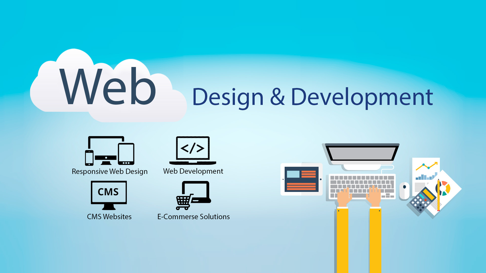
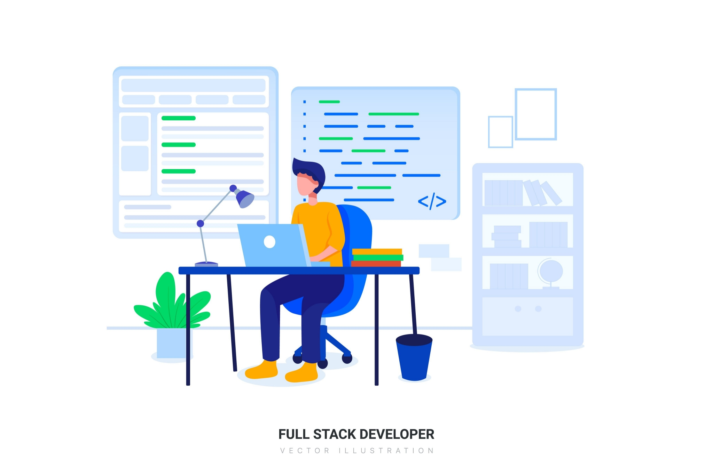
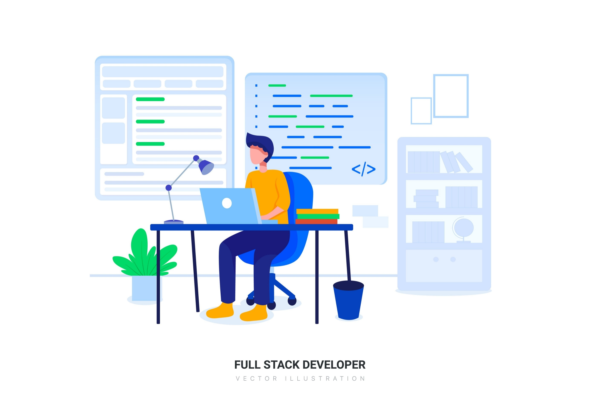

Choose a specific area of development to focus on: Development can encompass a wide range of fields,
from software development to real estate development to community development. It's important to choose
a specific area of development that you are passionate about and want to learn more about.
Stay up-to-date on industry news and trends: Read industry publications, blogs, and news sources to stay
informed about the latest trends and developments in your chosen field. Joining industry groups and
attending conferences and events can also help you stay connected and learn from others in your field.
Build a strong foundation of knowledge: Depending on your chosen field, you may need to have a strong
understanding of subjects such as economics, finance, law, and project management. Look for online
courses, books, and other resources that can help you build a strong foundation of knowledge in these
areas.
Network with other professionals: Building relationships with other professionals in your field can help
you stay informed about industry news and trends, as well as potentially lead to new opportunities. Look
for online communities, LinkedIn groups, and other networking opportunities to connect with others in
your field.
Be willing to learn and adapt: Development is a constantly evolving field, and it's important to be
willing to learn and adapt as new technologies and approaches emerge. Look for opportunities to expand
your skillset and stay on top of emerging trends and best practices.

Development Seed: A resource for developers, designers, and data scientists who want to build impactful
products and services.
Development Impact & You: A resource for anyone interested in learning about innovative approaches to
development.
Development Gateway: A platform for sharing data, tools, and stories about development.
United Nations Development Programme: A global network dedicated to promoting sustainable human
development.
World Bank Group: A collection of institutions working to end extreme poverty and promote shared
prosperity.
 
